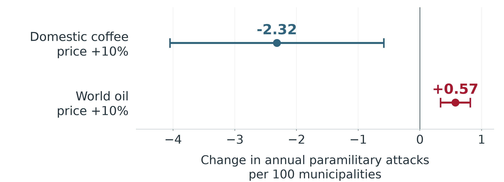
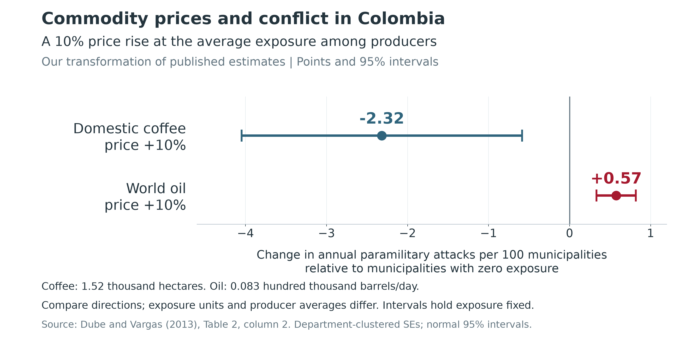

ECON 342 · Week 11 · Study version
War, peace,
and trade
Trade changes the gains at risk, dependence, and incentives. Institutions help shape the outcome.
Sixteen slides for review
History and model mechanisms
Panama and three conflict comparisons
Dependence and Canadian policy
Inspired by Jacques Fontanel’s 2014 essay.
The mental model in words
When leaders expect valuable trade to continue in peace and to be disrupted by fighting, trade gives them something additional to lose.
- Ricardo, H–O, and Krugman explain gains from specialization, scale, and variety.
- Gravity helps explain why a nearby market can be expensive to replace.
- Distribution and political influence help determine whose gains and losses affect decisions.
The premise to check is whether conflict would destroy gains that decision-makers expect and value.
Two historical lessons
Before 1914
Commercial integration coexisted with the outbreak of war.
This rejects a guarantee of peace. It leaves open whether trade restrained conflict relative to a less integrated world.
After 1945
European integration combined trade with shared institutions, including the coal and steel community.
Alliances, reconstruction, and political change also mattered. This history cannot isolate trade’s independent effect.
A causal claim needs a credible comparison
Peace can encourage trade. Alliances and geography can affect both. A correlation leaves these explanations entangled.
Quasi-experimental evidence
Use an outside shock that changes exposure differently across otherwise comparable places or trading pairs.
The missing outcome
Ask how the exposed units would have changed without that shock. The comparison group helps estimate this counterfactual.
For each study: what changed, who was more exposed, and what could make the comparison misleading?
Source: Teaching framework. Quasi-experimental designs rely on assumptions about comparability; researchers did not assign the shock.
Panama: shorter routes change market access
Construction began in 1904; commercial passage opened in August 1914. Route savings differed sharply by destination.

Gravity: buyers become easier to reach. Krugman: a larger reachable market can support scale, jobs, and relocation. Distance savings alone do not measure freight costs.
Source: Marshall (1913), p. 226, USF map collection. New York–San Francisco: (13,135 − 5,262) / 13,135 ≈ 60% shorter. Nautical miles; compare Magellan for San Francisco and Suez for Yokohama/Manila. CSV · Notes.
Try the canal on/off model
Illustrative model • historical route inputs
Run the same three-region economy twice. Shorten two routes while holding labour, productivity, and preferences fixed.
Follow the adjustment
Delivered costs change. Buyers shift purchases; wages and consumption prices adjust until budgets and sales balance.
Read the result carefully
Compare real income per worker and spending shares against canal off. These are conditional model predictions, not historical estimates.
Open the interactive canal experiment
Set shipping costs to zero. Why does changing distance then leave purchasing power unchanged?
Constant returns and fixed regional populations. Trade elasticity, shipping technology, labour sizes, and the San Francisco–Yokohama route are illustrative. No firm entry, scale effects, migration, tolls, or project costs are simulated.
Panama: a conditional result and a proposed extension
Published population result
1% more market potential → about 2.3% more population by 1940 in the preferred county comparison.
With state × year effects, the estimate is no longer statistically distinguishable from zero. Population can relocate; this is not an annual growth rate or a national welfare gain.
Synthetic DiD: proposed, not run
Weight lower-exposure places to resemble higher-exposure places before opening, then compare changes.
World War I, anticipated construction, and effects on comparison places complicate the counterfactual. A good pre-opening fit does not settle these issues.
Source: Maurer and Rauch (2023), Tables 3 and 6. A causal reading requires access gains to be unrelated to other differential growth shocks after adjustments. Published design: continuous-exposure DiD, not SDID. Panel: 1880, 1900, 1910, 1920, 1940; 1910 was already during construction. Exact estimate and source notes.
Suez: transport disruption changes trade
Transport disruption → bilateral trade


Compare pairs facing larger detours with pairs facing little change. Zero is the adjusted baseline, not zero trade. Lower values mean weaker trade after removing pair differences and common year shocks. Pre-closure trends also differ; the comparison needs scrutiny.
Source: Feyrer (2021), reconstructed Figure 1. Assumption: other shocks do not track route exposure. These are group averages, not four causal coefficients. Identifies a transport channel, not whether trade prevents war. CSV.
Colombia: two income mechanisms
Commodity income shocks → civil violence
Coffee: civilian earnings
A higher price can improve workers’ peaceful earning opportunities. Fighting then has a higher opportunity cost.
Oil: revenues worth capturing
A higher price can make control of resource revenues more valuable to armed groups.
The study compares changes in violence across municipalities with different production exposure, 1988–2005.
Source: Dube and Vargas (2013). Coffee IV uses foreign export supply and climate-based production suitability. Oil uses world prices × 1988 local production and assumes price exogeneity. A causal reading requires the instruments and oil-price changes not to track other causes of differential violence.
Higher coffee and oil prices have opposite estimated effects


Dots are estimated average changes; bars show 95% uncertainty intervals. Fractional counts describe expected averages. A causal reading requires the instruments and oil-price changes not to track other causes of differential violence.
Source: Dube–Vargas (2013), Table 2, col. 2. Our transformation: 10% price rise at mean producer exposure, relative to zero exposure. Approximate normal intervals hold exposure fixed. Compare directions; exposures differ. Earnings and resource revenues are proposed mechanisms. Not independently re-estimated. CSV · Notes.
Atlantic integration and conflict within Europe
Atlantic market integration → European conflict
Cyclone shocks × wind-based sailing time shift Atlantic integration. The integration proxy measures how much a wheat-price change in one market passes into the other. Storms affect routes differently because sailing exposure differs.
Finding
Greater Atlantic integration is estimated to reduce conflict onset within Europe. Higher wages and smaller armies fit an opportunity-cost mechanism.
Assumption to examine
The weather variation must affect conflict only through trade. Storm damage to fleets could also change military power and land-conflict incentives.
Trade with the New World concerns peace within Europe; it does not establish that colonial expansion was peaceful.
Source: Ahsan, Panza and Song, March 2020 working paper, Tables 4–5. Main IV analysis: sailing era before 1871. Qualitative finding from this version; no numerical result imported from the 2025 article.
Dependence and alternatives
Vulnerability depends on how costly it is to replace access to an essential input or market.
- Few usable suppliers, long switching times, and limited infrastructure increase exposure.
- Diversification can lower disruption costs and reduce a partner’s coercive leverage.
- Easier replacement can also lower the economic cost of breaking one relationship.
These effects can point in different directions. Their combined effect on conflict depends on the wider setting.
Source: Martin, Mayer, and Thoenig (2008); WTO (2023), Chapter C.
Reading dependence and export data
| Observation | Supported reading | Further evidence needed |
|---|---|---|
| EU: Russia’s share of gas imports fell from 45% (2021) to 13% (2025) | A decline of 32 percentage points in this import share | Volumes, prices, household costs, infrastructure |
| Canada, 2022: merchandise export value +22.5%; volume +2.5% | Receipts rose much faster than quantities | Producer gains, household costs, and broader welfare |
A share is not a volume. Higher export receipts do not imply that every Canadian gained.
Source: Council of the EU; Statistics Canada, 2022 annual review.
Zheng: the bargain and the signal
Two rivals privately know how costly fighting is. A mediator offers shares. Both must accept; either rejection leads to costly competition.
Zheng distinguishes peace that works under particular expectations from peace secure across conflict expectations allowed by the model.
In related work, accepting a modest offer may reveal weakness. A generous share can induce one side to accept regardless of strength, hiding that information.
Under the paper’s conditions, unequal shares maximize combined expected welfare. Conflict remains possible.
Source: Zheng (2019); Kamranzadeh and Zheng (2025). Mediation models. Our trade connection concerns the gains preserved by peace.
A strong Canadian policy argument
- Identify the gains from trading a particular product.
- Specify a disruption, a time horizon, and the cost of replacing access.
- Compare a practical response with its cost: transport links, alternative contracts, inventories, or more predictable rules.
- Use evidence to distinguish what happened, why the model predicts it, and what policy you recommend.
Canada can preserve gains from integration while improving its options. The question is which options justify their cost.
Discuss Choose one industry. What additional data would change your policy recommendation?
Three causal questions, three different lessons
| Case | What the evidence supports | What remains conditional |
|---|---|---|
| Suez | A route disruption can reduce trade even among distant countries. | Other shocks must not track route exposure. |
| Atlantic | Greater Atlantic integration is estimated to reduce European conflict onset. | Weather must affect conflict through trade alone. |
| Colombia | Coffee and oil price increases have opposite estimated effects on local violence. | Other changes must not explain the price-related differences across municipalities. |
For Canada, investigate the mechanism and local conditions before importing another country’s estimated effect.
Source: Synthesis of the three designs. Zheng adds a bargaining mechanism: valuable peace can still require an agreement both sides are willing to accept.